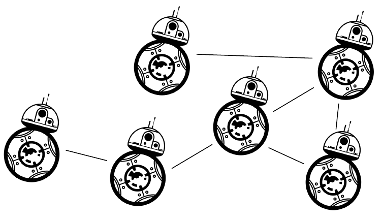
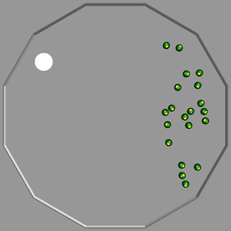

AutoMoDe-Gianduja
Automatic Design of Communication-based Behaviors
for Robot Swarms


Hello. i'm going to present my work abt communication in robot sw
Design Methods
Manual design
- Design done by hand by an expert.
Automatic design
- Design automatically done by an optimization algorithm
in order to design such system, there are 2 main approaches ... the problem
in manual, trial an error, guided by experience, no general methodology .... automatic design promising approach to overcome those diffi,
Automatic Design
- Evolutionary methods
-
Modular methods

the prob is cast in an optimization problem, design choices define search space and is explored by opti. most work done via Evolutionary rob, tradionaly control soft neural network and opti algo Evolutionary alg. one other way is modular design, where modules and you assemble them with opti
AutoMoDe: Automatic Modular Design Francesca et al, SI (2014)
- Control achitecture : Probabilistic Finite State Machine
- Optimization algorithm : any

we will study autmode, a modular approach first introduced in 2014, pfsm max 4 states 4 outgoing, IT has NO communication capabilities, robot can sense neighbors but not send any messages.
Our research question and objective
It is possible to automatically design a swarm of communicating robots using AutoMoDe ?

Do robots perform better with communication capabilities than without ?
is it possible for the opti alg to assign a semantic to a message?
Hypothesis
The automatic design process assigns a specific, task dependent semantic to a message.

Idea
- Robots may send one message.
- The automatic design method defines a task-specific semantic: it associates a cause/effect to the message.
We demonstrate this idea on three tasks that require messages with different semantic.
we have our hyp, now the idea for exps, we choose to allow rob to send 1 message, so 1 bit of information, we will see if the opti alg will be able to asign a semantic, that is to say associate causes and effects to message in different situations
Semantic ?


EvoCom
We introduce EvoCom as a yardstick for our system.
A modification of Evostick (Francesca et al, SI vol. 8667 (2014))
A modification of Evostick (Francesca et al, SI vol. 8667 (2014))
No hidden layers.
30 input nodes for sensors (25) and messaging (5).
3 output nodes for wheels (2) and message broadcasting (1).
We introduce EvoCom, a modification of Evstick, Evostick is an rather standard method that we already used prev to compare methods ,Evolutionary method, that uses signe layer feed forward neural network with no hiden layer, we use it to compare
Robot: E-puck
Sensors
- Proximity
- Light
- Ground
- Range and bearing
Actuators
- Wheels
- Range and bearing
Behavioral Modules of Gianduja
| Behaviors | Conditions |
|---|---|
| Exploration | Black floor |
| Stop | Gray floor |
| Phototaxis | White floor |
| Anti-phototaxis | Neighbor count |
| Attraction | Inverted neighbor count |
| Repulsion | Fixed probability |
| Additonal ones: | |
| Attraction to message | Message count |
| Repulsion to message | Inverted message count |
One new parameter on existing behaviors for message broadcasting. Two new conditions and two new behaviors.
Tasks

Aggregation

Stop

Decision
Evalutation and experimental protocol
Assessment with a swarm of 20 e-puck robots:
- For each mission and each method: 15 runs → 15 instances of control software.
- Each run with 200 000 simulations.
- Each instance is evaluated once in simulation and once in reality
Results aggregation
All robots should aggregate on the white spot.
the higher the better, explain results?? TODO
Results stop
All robots should stop when the white spot is found by any robot.
Results decision

All robots should go either to the right or to the left side of arena based on center color.
Aggregated results
Conclusions
- Meaningful semantics can be automatically defined per-mission by the design process.
- Gianduja performs better than EvoCom.
- Gianduja performs better than Chocolate in 2 out of 3 considered tasks
Future work
- Test on futher tasks
- Extend to more messages